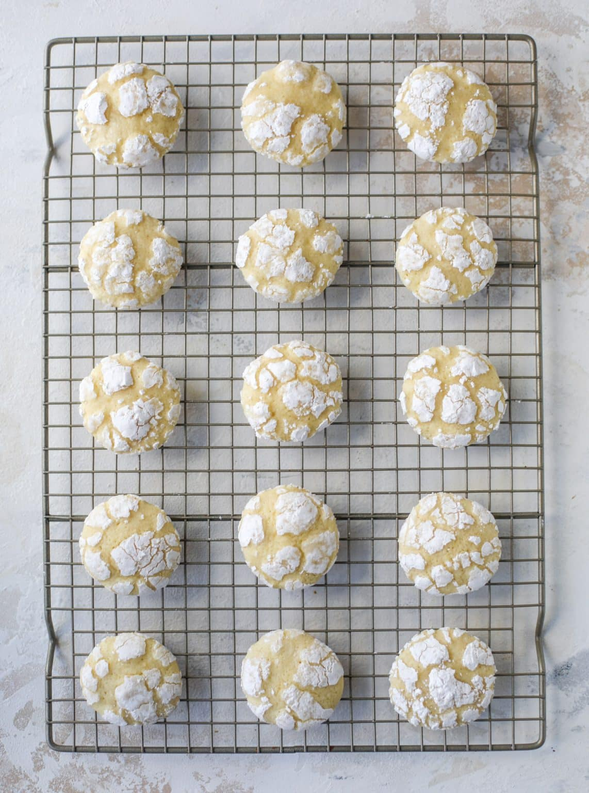

Home
Lemon Crinkle Cookies

Lemon crinkle cookies are a delicious, soft, lemony treat that's coated in powdered sugar to create a beautiful crinkled appearance!
Ingredients: [Yield - 36 cookies]
- 226g [1 cup/16 tbsp] unsalted butter, melted and cooled
- 400g sugar
- 480g all-purpose flour
- 3g salt
- 4.2g [1 tsp] baking soda
- 100g [2] eggs
- 2 egg yolks
- 4 tbsp lemon juice
- 6 tsp lemon zest
- 2 tsp lemon extract
- 2 tsp vanilla extract
Coating:
Directions:
- Mix together the flour, baking soda, and salt.
- In a large bowl, add the melted butter and whisk in the sugar until smooth. Add in the egg and egg yolk, mixing to combine, then whisk in vanilla and lemon extracts, lemon juice and lemon zest. Stir in dry ingredients, mixing until a dough forms. If needed, use your hands to bring together the dough. Refrigerate for 2 to 4 hours. I find that chilling the dough before baking, but after forming gives the best results.
- Preheat the oven to 325°F. Line two baking sheets with parchment paper. Fill a bowl with powdered sugar.
- Roll the dough into 1-inch balls and roll them in the powdered sugar, coating completely. Place the balls on the baking sheet 2 inches apart. Bake for 10 to 12 minutes, or until the edges are just set and the center isn’t jiggling. Let cool completely for serving!
Recipe Source